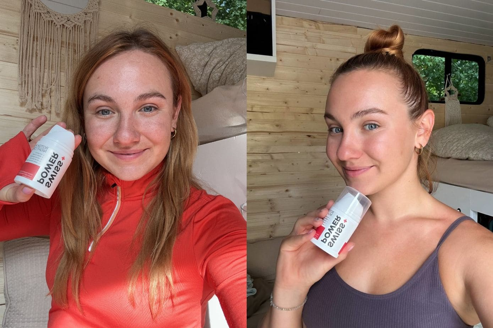

Advertorial
A rejtett igazság a bőre nedvességszomjáról - Olvassa el, mielőtt újra törlik!
Gondolkodott már azon, hogy a bőre miért vágyik egyre több és több hidratáló krémre, és miért érzi magát függőnek és elégedetlennek? Van egy forradalmi megoldás, amely megtöri ezt a ciklust.
A tökéletes bőrre való törekvés során sokan beleesnek abba a csapdába, hogy mesterséges termékekkel túlhidratálják a bőrt. Az irónia az, hogy ezek a hidratálásra tervezett krémek idővel gyakran rosszabb állapotba hozzák a bőrünket.
A bőr a testünk legnagyobb szerve, és egyben az egyik legmegtévesztően összetettebb is.
Nap mint nap elhitetik az emberekkel, hogy bőrünk egészségének megőrzése érdekében termékek folyamatos áramlására van szükségük. Ez azonban a legtöbb esetben nem biztos, hogy a legjobb választás.
Képzelje el: matt, élettelen bőr, amely már nem tudja, hogyan hidratálja magát. A hidratálást ígérő, de csak függőséghez vezető krémek végtelen alkalmazása. Minél többet használ, a bőre annál jobban vágyik rá.
Nem csak a szárazságról van szó – ez egy mélyebb problémáról szól. A tipikus hidratálószerek megzavarják a bőr természetes önhidratáló képességét, és ezzel egy olyan függőségi körforgást hoznak létre, amely idő előtt öregíti a bőrt.
Erről később...
Mi folyik itt?
A bőrápolás nyüzsgő világában titkos összeesküvés bontakozik ki egy nagyhatalmú vállalat folyosóin. A vállalat élén ravasz vezetők egy csoportja mesteri tervet dolgoz ki, hogy a fogyasztókat folyamatosan a hidratáló krémek rabságában tartsák – szépségbirodalmuk aranylúdját.
Egy csábító ígéret..
Egy marketingcsapat meggyőző stratégiákkal felfegyverkezve, a hidratáló krémeken keresztül mutatja be az örök fiatalság és a ragyogó bőr csábítását. A hidratálás ígérete szirénhanggá válik, és a fogyasztókat a függőség véget nem érő körforgásába vonzza.
Az ördögi kör
Ahogy a fogyasztók bedőlnek a kezdeti bájnak, akaratlanul is belépnek a vállalat által gondosan megtervezett körforgásba. A hidratáló krém minden egyes alkalmazása szükségszerűségnek tűnik, ami olyan függőséget teremt, amely biztosítja a vállalat számára a folyamatos bevételt.
A megtévesztő sokszínűség
A több bőrápolási márkát birtokló vállalatok (tudta, hogy a bőrápolási márkák 90%-a a 3 kozmetikai óriáscég valamelyikének tulajdonában van), stratégiailag egy sor hidratáló krémet forgalmaznak. A krémektől a testápolókig minden termék azt állítja, hogy egyedi megoldást kínál, és azt a hitet táplálja, hogy a több jobb. A fogyasztók a választék illúziójának csapdájába esnek, és egyre mélyebbre zuhannak a hidratáló labirintusban.
A rejtett napirend
A színfalak mögött a vállalat által foglalkoztatott tudósok gondosan olyan termékeket állítanak össze, amelyek ahelyett, hogy a kiváltó okot kezelnék, a folyamatos hidratálás szükségességét állandósítják. Az összetevőket nem a hosszú távú előnyök, hanem az azonnali kielégülés érdekében választják ki, biztosítva ezzel a folyamatos eladásokat.
A körforgás folytatódik...
Mi a helyzet az önhidratáló képességgel?
A bőr tudja, mikor van szüksége hidratálásra, és normál körülmények között szükség szerint faggyút termel.
Sajnos a hidratáló termékek krónikus használata megzavarja ezt a folyamatot.
Amikor a bőr azt érzékeli, hogy már hidratált, egyszerűen abbahagyja a faggyútermeléssel és faggyúkiválasztással kapcsolatos feladatát.
A hidratálókréme alkalmazása ideje alatt, vagy ha abbahagyja a használatát, a bőrből hiányzik a kritikus védelem, és rendkívül érzékeny a kiszáradásra.
Ez gyakran arra készteti az embereket, hogy azt higgyék, hogy egyszerűen csak krónikusan száraz a bőrük, és nincs más választásuk, mint a bőrápoló termékekre hagyatkozni a probléma orvoslására.
Sok szakértő ezt a jelenséget "krémfüggőségnek" nevezi.
Mikor gondolt utoljára arra, hogy miből készül a kedvenc hidratáló kréme?
Talán elolvasta a címkét, de a sok kimondhatatlan összetevőt szükségesnek tartotta?
Sokan nem tudják, hogy a legtöbb kereskedelmi termék összetevői valójában elősegítik a bőr kiszáradását. Az olyan anyagok, mint az alkoholok, savak, tartósítószerek, illatanyagok és színezékek oldószerként viselkedhetnek, amelyek eltávolítják az olajokat a bőrből.
Ráadásul a glicerin, amely állítólag segít a bőrnek, csak akkor hatékony, ha a páratartalom 70 százalék felett van.
Ha száraz vagy hideg éghajlaton él, vagy ha az ideje nagy részét zárt térben tölti, nem valószínű, hogy a környezeti páratartalom valaha is ilyen magas lesz.
Mi a megoldás?
Bemutatjuk a SWISS+POWER Éjszakai krémet – a bőrápolás világának újítása. Ez a forradalmi formula nem csak hidratál, hanem helyreállítja a bőr önhidratáló képességét.

"Körülbelül 2 évbe telt, mire végre tökéletesítettük a helyreállító SWISS+POWER Éjszakai krémünket, de amikor végre sikerült, ahogy mondani szokták, a többi már történelem."
Hogyan működik?
A ragyogó bőr mögött álló tudomány feltárása olyan összetevők által kifejlesztett összetevőkkel, amelyek bizonyítottan hosszú távú előnyökkel járnak a bőr önhidratáló képességének helyreállításában.
SHEA VAJ
A titok a bőr önhidratáló képességének helyreállításához. A létfontosságú lágyító- és tápanyagokkal teli Shea Vaj nem csak hidratál, hanem túlmutat rajta, javítja a bőr nedvességgátját. Bőre a természetes hidratálás tárházává válik, kiszabadulva a mesterséges hidratálók béklyóiból.

ROZMARING
A rozmaring gyulladáscsökkentő és antioxidáns tulajdonságaival lép a helyébe. A felszínen túl a rozmaring támogatja a bőr általános egészségét, olyan környezetet teremtve, amelyben a bőr nem csak egészségesebbnek, de feszesebbnek is tűnik. Ez nem csak a külső megjelenésről szól, hanem a bőr belső ápolásáról is.
VARÁZSMOGYORÓ
A tonizáló tulajdonságairól híres növényi csoda. A bőr tonizálásával nemcsak a bőrpírt csökkenti, hanem hatékonyan kezeli a zsíros és pattanásos bőrt is. Ráadásként a Varázsmogyoró természetes aromája kellemes érzéki élményt nyújt a bőrápolási rutin során.
Ezek a gondosan kiválasztott összetevők együttesen alkotják a SWISS+POWER Éjszakai krém sikerének alapját. Ez nem átmeneti megoldás – ez a bőrápolás holisztikus megközelítése, amely revitalizál, feltölt, és helyreállítja a bőr veleszületett önhidratáló képességét.
Tapasztalja meg a természet átalakító erejét a SWISS+POWER Éjszakai krémmel – mert bőre nem érdemel kevesebbet.
Ébredjen természetesen puha, rugalmas és megfiatalított bőrrel.
Kezdje el a 6 hónapos átalakulást, hogy megszabaduljon a függőség láncaitól és felvállalja bőre valódi potenciálját.
De működik-e?
Ne csak a mi szavunkat higgye el – hallgassa meg azoktól, akik már megtapasztalták az átalakulást.
A SWISS+POWER Éjszakai krém hatékonyságának igazi bizonyítéka azok tapasztalatai, akik kipróbálták a terméket és részt vettek a független felmérésben*.
A különböző hátterű és bőrtípusú felhasználók átalakító eredményekről számoltak be, kiemelve a termék hatékonyságát a bőr önhidratáló képességének helyreállításában és a gyakori bőrápolási problémák kezelésében.
- 100% hidratáltabb bőrről számolt be
- 96% simább bőrről számolt be
- 92% kellemes és nyugtató illatról számolt be
*A közelmúltbeli vásárlók független felmérésén alapul. Bizonyítottan fokozza a bőr hidratáltságát, rugalmasságát és kisimítja a bőrt, miközben kellemes, nyugtató illatot biztosít.
Tesztelés (Hát, én meglepődtem)
A terméket a hivatalos honlaprólendeltem, és elég gyorsan megérkezett (néhány napon belül).
Volt egyfajta érzésem, hogy ha ez nem fog működik, akkor semmi sem fog.
Ezért azonnal bedörzsöltem a bőrömbe. Az állaga nagyszerű volt, és azonnal beszívódott a bőrömbe.
Nem volt túlságosan "olajos", mint néhány hidratáló hajlamos, ami nagyszerű volt.
Másnap reggel, amikor felébredtem, nem igazán vártam, hogy látok valami különbséget.
Ami jó volt, mert nem is láttam.
Végül is semmi jó nem működik egyetlen nap után. Valójában nem lennék meglepve, ha hónapokba telne, mire észrevenném a különbséget (ha egyáltalán látok valamit).
De itt van, ahol a dolgok jóra fordulnak. Mert akár hiszi, akár nem, NEM tartott hónapokig.
Sőt, még egy hónap sem kellett hozzá. A második héten, amikor a krém minden esti használata után felébredtem, észrevettem, hogy a bőröm SOKKAL simábbnak tűnt.
A bőröm ragyogóbb és láthatóan simább volt. A nappali krémet teljesen abbahagytam, egyszerűen nem volt rá többé szükség.
És ez csak KÉT hét után történt!
Szóval ekkor kezdtem igazán izgatottá válni. Évek óta először éreztem, hogy visszatér a remény.
Mert ha csak két hét kellett ahhoz, hogy változást lássak, képzelje el, mi történhet egy-két hónap múlva?
A családom és a barátaim is észrevették. Azt hitték, hogy végre minőségi alvásaim vannak ...
Amihez nyilvánvalóan semmi köze nem volt.
De az a tény, hogy senki sem mondta többé, hogy milyen fáradtnak tűnök, már önmagában elég jutalom volt.
Nem tudtam megállni, hogy ne mosolyogjak minden alkalommal, amikor a tükörbe néztem. Olyan volt, mintha egy időgépen keresztül néznék.
Tudom, ez úgy hangzik, mint valami mese. Én magam még mindig nem igazán hiszem el.
Gyorsan előrehaladva most, hogy ezt írom, és még mindig minden egyes nap ezt a krémet használom az arcomon. Két kis sötét folt, ami az arcomon volt, elhalványult... Egy mély ránc, ami a bal szemem alatt volt, sokkal kevésbé látszik...
"Az önbizalmam pedig minden eddiginél nagyobb! Újra önmagamnak érzem magam!"
Felmerül tehát a kérdés, hogy ÖNNEK is működni fog-e?
Hogy őszinte legyek, nem tudom 100%-os bizonyossággal kijelenteni, hogy fog.
De ha már régóta küzd száraz bőrrel vagy zsíros bőrrel, és SEMMI más nem vált be, akkor nagyon ajánlom, hogy próbálja ki ezt.
Teljesen megváltoztatta az életemet, és nem én vagyok az egyetlen.
Szóval tegyen magának egy szívességet, és próbálja ki saját magán. Még akkor is, ha tele van szkepticizmussal, hogy ez tényleg működhet-e.
Fogalma sincs, hogy egy ilyen apró és egyszerű dolog mekkora különbséget tud tenni.
Ráadásul azt AKARJÁK, hogy eredményeket érjen el, különben nem fizetsz. Szóval SEMMIT sem veszíthetsz.
Meddig fog még küzdeni a túlárazott és hatástalan hidratáló krémekkel?
A SWISS+POWER Éjszakai krém valódi megoldást kínál Önnek természetes és biztonságos összetevőkkel, amelyek klinikailag bizonyítottan helyreállítják a bőr önhidratáló képességét.
Mondjon búcsút a káros vegyi anyagoknak és a nagyvállalatok megtévesztő taktikáinak, amelyek hatalmas profitot termelnek, és ebben az ördögi körforgásban tartják Önt a hidratálókrémek és egyéb termékek rabságában, amelyek csak nekik kedveznek, nekünk – a fogyasztóknak – nem.
Sok bőrápolási termékkel ellentétben mi a teljes átláthatóságban hiszünk.

"A SWISS+POWER termékeket több éves kutatás és kipróbálás alapján fejlesztették ki, és egy kis svájci székhelyű vállalat állítja elő, amely a bevétel 80%-át olyan termékek kutatására és fejlesztésére fordítja, amelyek hosszú távon változást hoznak és a gyökereket kezelik – a marketing helyett, biztosítva, hogy minden összetevő hozzájáruljon a bőr természetes képességeinek helyreállításához."
A SWISS+POWER Éjszakai krémmel olyan formulában bízhat, amely a bőr egészségét helyezi előtérbe.
Ne hagyja, hogy a félrevezető termékek felgyorsítsák az öregedési folyamatot. A SWISS+POWER Éjszakai krém azért van itt, hogy valódi eredményeket nyújtson a költségek töredékéért, biztosítva, hogy többé ne kelljen végtelenül keresgélnie olyan bőrápolási megoldásokat, amelyek elmaradnak, vagy ami még rosszabb, károsítják a bőrét.
Mennyi időbe telik, amíg eredményeket látok?
A SWISS+POWER Éjszakai krémmel a revitalizált és önhidratált bőr felé vezető út izgalmas, és már néhány hetes következetes használat után észreveheti a pozitív változásokat.
Az egyéni eredmények eltérőek lehetnek, de sok felhasználó már két-négy hét alatt fokozott hidratáltságról, csökkentett bőrpírról és a bőr általános egészségi állapotának javulásáról számol be.
A természetes összetevők egyedülálló keveréke, beleértve a varázsmogyorót, a shea vajat és a rozmaringot, harmonikusan működik, hogy felszabadítsa a bőr veleszületett képességét az önhidratálásra.
A türelem a kulcs, mivel a formula belülről táplálja a bőrt, és idővel hozzájárul a ragyogó és megfiatalodott arcbőrhöz.
Válassza a SWISS+POWER Éjszakai krémet az éjszakai rituáléjává, és induljon el egy olyan utazásra, amelynek során felfedezheti bőre teljes potenciálját. A következetesség a szövetségese az egészségesebb, élénkebb arcbőr felé vezető úton.
Mennyi ideig kell használni a krémet?
Az Ön állapotától, korától és életmódjától függően ajánlott a SWISS+POWER Éjszakai krémet legalább 3-6 hónapig következetesen használni, hogy teljesen helyreálljon a bőr önhidratáló képessége.
Az "elveszett és újonnan megtalált" önnedvesítő képesség megőrzése érdekében ajánlott az egy hónapos ciklust 4 havonta megismételni.
Ne feledje, hogy az egyéni eredmények eltérőek, és minden egyén egyedi, és a kezelést ehhez kell igazítani.
Mennyi ideig tart egy tégely?
Általában egy flakon legalább két hónapig elegendő, ajánlott a nyakra és a dekoltázsra is használni. Gyakran elfelejtjük, hogy a bőr ott is érzékeny, és az öregedés jelei ugyanolyan gyorsan megjelennek, mint az arcodon.
Hol vásárolhatom meg a SWISS+POWER Éjszakai krémet?
A terméket bármikor megrendelheti a hivatalos weboldalon a legjobb áron.
Jelenleg egy Különleges promóció fut kizárólag az új ügyfelek számára.
Ez a promóció csak 11.11.2023-ig, vagy amíg el nem fogy.
Minden megrendelés 30 napos pénzvisszafizetési garanciával jár – kérdés nélkül.
Visszaküldheti a termékeket, és visszakérheti a pénzét, ha nem elégedett az eredménnyel, és vissza fogja kapni a pénzét.
Ez azt jelenti, hogy teljesen kockázat nélkül kipróbálhatja a terméket! Ilyen garanciát nem kap semmilyen más bőrápoló terméknél, amit jellemzően drogériákban vásárol.
Ne feledje – nem csak egy krémet használ, hanem egy ragyogó, önhidratáló jövőt nyit meg a bőre számára.
Képzelje el, mennyi PÉNZT és IDŐT fog megtakarítani? Négyhavonta egyszer (vagy kevesebbszer) egyetlen termék használatával – miután a bőre önhidratálódik.
Készen állsz arra, hogy kiszabaduljon a hidratáló csapdából?
Próbálja ki még ma kockázatmentesen a SWISS+POWER Éjszakai krémet, és legyen tanúja az egészséges, önmagát hidratáló bőr varázslatának, eltömődött pórusok és pattanások nélkül!
Alig várjuk, hogy halljuk a SWISS+POWER Éjszakai krémmel kapcsolatos tapasztalatait.
Az Ön eredményeit 1 hónap, 4 hónap és hosszabb idő után.
Előtte és utána képet akar majd készíteni!
Kattintson ide az új ügyfeleknek szóló speciális ajánlat elérhetőségének ellenőrzéséhez >>De ne feledje, ez a különleges ajánlat és az ingyenes szállítás csak azok számára elérhető, akik ma itt, ezen az oldalon lépéseket tesznek.
Ha elhagyja ezt az oldalt, a SWISS+POWER Éjszakai krém csak a hivatalos weboldalon lesz elérhető a teljes normál áron, ami majdnem kétszerese annak, amiért ma megvásárolhatja.
Próbálja ki most kockázatmentesen a SWISS+POWER Éjszakai krémet >>
Mit szólnak mások a SWISS+POWER Éjszakai krémhez?
LUKÁCS ÉVA, 56 éves, Monor | Ellenőrzött vásárló
⭐⭐⭐⭐⭐
“Imádok mindent a SWISS+POWER termékcsaládban, és ez az éjszakai krém annyira szuper, hogy nappal is használom! Teljesen beszívódik, és nagyon sima érzést hagy a bőrömön.
TAz illata tökéletes - nem túl erős, és felvitel után gyorsan elillan. Migrénes betegként zavarnak az erős illatok, és ennek a krémnek kellemes illata van, ami nem marad meg.
De ha mégis, akkor sem lenne bajom vele! Elég sok termék van a tégelyben, így úgy érzem, hogy a pénzemért értéket kaptam.”
GYŐRI ANDRÁS, 32 éves, Balatonfüred | Ellenőrzött vásárló
⭐⭐⭐⭐⭐
"Igazán kellemes arckrém. A bőröm nagyon jó állapotú tőle. Minden alkalommal csak egy kis mennyiséget kell használni, és a bőrön puha és rugalmas érzést hagy maga után."
P. ILONA, 74 éves, Tata | Ellenőrzött vásárló
⭐⭐⭐⭐⭐
"Már néhány nap után, miután ezt a krémet éjszakánként használtam, az arcom puhábbnak és simábbnak érzem. Nem érzem olyan krémesnek, mint amilyennek szeretném, hogy legyen felkenve, de kellemes érzést ad a bőrömnek. Csipkebogyó olajat is adok hozzá, de biztos vagyok benne, hogy ez a krém javítja a bőröm állagát. 74 éves vagyok, és most van a legszárazabb időjárásunk, szóval ez már mond valamit, hogy a bőröm hidratáltabbnak érződik. Enyhén illatosított, és nem vagyok oda az illatáért, de nem veszem észre, ha egyszer az arcomon van. Valószínűleg újra fogom venni ezt a krémet."
LAJTOS ANNA, 26 éves, Budapest | Ellenőrzött vásárló
⭐⭐⭐⭐⭐
"Imádom ezt az éjszakai krémet. Nagyon jól hidratál, és másnap reggelre kellemesen puha a bőröm. Egy kevés tényleg elég belőle, így a tégely jó ideig kitart. Az illatát is imádom!"
BARTA RÓZSA, 40 éves, Szeged | Ellenőrzött vásárló
⭐⭐⭐⭐⭐
"Miután megváltoztattam az étrendemet, és leszoktattam magam a cukorról, a feldolgozott élelmiszerekről és az állati eredetű termékekről, a testem új szintre jutott a környezettudatosság terén. Rájöttem, hogy nem kenegethetem tovább a bőrömet megkérdőjelezhető vegyi anyagokkal terhelt termékekkel. Természetes alternatívákat kezdtem keresni, és némi próbálkozás és tévedés útján rátaláltam erre a termékre. Csodákat művel a bőrömmel (fehér/kombinált/száraz/érzékeny). Egy hét alkalmazás után jelentős javulást tapasztaltam. A bőröm sokkal rugalmasabb lett, és kevésbé hajlamos a mosolygásból/ráncokból vagy a stressz bármely jeléből adódó ráncokra."